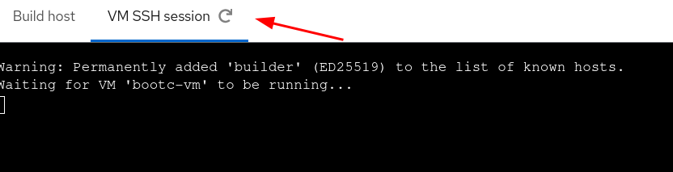
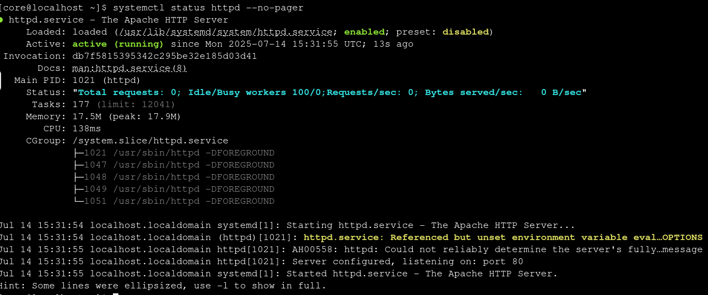
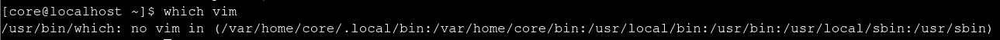

bootc-image-builder の起動
ここまでは、標準的な OCI イメージとツールを扱ってきました。しかし、bootc イメージはシステムとして使用することを目的としており、アプリケーションコンテナのように実行するものではありません。
このイメージをホストとして起動するには、bootc を使用してファイルシステムにインストールします。ただし、bootc 自体はディスクやマシンの作成については関知しません。
bootc イメージをホストにデプロイする方法は、ターゲット環境に応じて複数あります。このラボでは、KVM 仮想マシン上で実行する QCOW2 イメージを作成します。QCOW2 イメージのビルドには、bootc-image-builder というツールを使用します。
|
この操作の完了には約4分かかります。 |
podman run --rm --privileged \
--volume .:/output \
--volume ./config.json:/config.json \
--volume /var/lib/containers/storage:/var/lib/containers/storage \
registry.redhat.io/rhel10/bootc-image-builder:10.1 \
--type qcow2 \
--config config.json \
builder-{guid}.{domain}/test-bootcこのツールは、コンテナイメージの内容を仮想ディスクに展開するための bootc ツールを含む、コンテナ化されたバージョンの image builder です。サポートされる出力形式には AMI や VMDK があります。ベアメタルの場合は、bootc サポート付きの Anaconda を使用して物理ディスクにインストールできます。PXE や HTTP Boot など、RHEL ホストの一般的なインストール方法も利用できます。
ビルド時、bootc-image-builder はディスク上のイメージを直接使用します。特定の操作に昇格された権限（例：root として実行する必要がある）が必要なため、イメージはシステムストレージの場所にある必要があります。元のビルドが一般ユーザーで行われた場合、podman image scp を使用してイメージをシステムストレージにコピーできます。
bootc イメージの準備と実行
KVM ゲストを起動するため、作成した QCOW2 ディスクイメージをデフォルトの libvirt ストレージプールにコピーします。
cp qcow2/disk.qcow2 /var/lib/libvirt/images/bootc-vm.qcow2virt-install を使用して、シンプルな VM を定義し、新しいディスクイメージをインポートします。
virt-install --name bootc-vm \
--disk /var/lib/libvirt/images/bootc-vm.qcow2 \
--import \
--memory 2048 \
--graphics none \
--osinfo rhel9-unknown \
--noautoconsole \
--norebootVM が定義されたら、起動できます。
virsh start bootc-vmbootc イメージが動作する VM への SSH 接続
次に、VM にログインします。VM SSH session タブに切り替えてください。
|
SSH セッションが接続されない場合やエラーが発生した場合は、タブ名の横にある Refresh をクリックして再接続できます。プロンプトは次のようになります。  |
システムの起動が完了したら、以下の認証情報でログインできます。これらの情報は、ディスクイメージ作成時に bootc-image-builder によって注入されたものです。ユーザーの作成や認証方法の処理には複数の方法があり、bootc-image-builder によるディスクイメージのカスタマイズはその1つです。
以下の認証情報で VM にログインしてください。
パスワード：
redhat初期イメージには Apache が含まれているので、そのステータスを確認してみましょう。
systemctl status httpd --no-pager出力は次のようになります。

エディタ vim がインストールされているか確認してみましょう。
which vim
標準エディタのインストールを忘れていました！
次のステップで vim をイメージに追加しましょう。